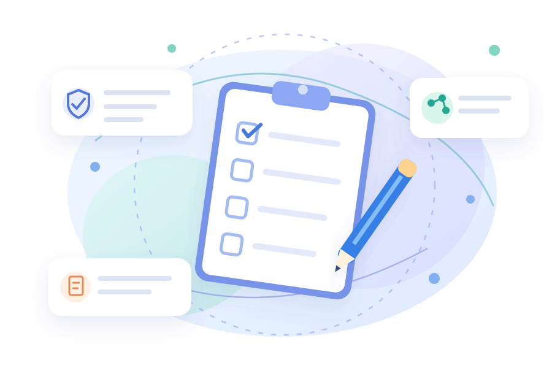

교사
학생 이해와 학교 지원
학생 면담과 안전한 보호자 소통을 준비합니다.
학생의 생활을 살피고,
필요한 지역자원을 찾아보세요.

학생 면담과 안전한 보호자 소통을 준비합니다.
기관별 역할과 이후 점검할 일을 정리합니다.
25문항으로 관찰된 위기징후와 현재 안전을 확인합니다. 모르는 내용은 ‘미상’으로 남깁니다.
점수·생활 맥락을 해석하고, 지원연계 맵에서 필요한 기관과 첫 행동을 확인합니다.
지원연계를 종합사정·사례협의·서비스계획 초안으로 이어갑니다. 상담기록·계획조정·점검은 선택사항입니다.
현장 검토용 비표준화 TEST 도구입니다. 진단·법적 판정·서비스 선정의 근거가 아니며, 긴급한 안전문제는 평가 완료를 기다리지 않고 대응합니다.
응답을 선택한 뒤 평가를 완료해 주세요.
결과 해석 → 지원연계 맵 → 종합사정·사례협의·서비스계획 순서로 확인하세요.
평가 내용은 자동으로 서버에 저장되지 않습니다. 필요하면 비식별 응답만 JSON 파일로 저장하고 같은 기기 또는 다른 기기에서 다시 불러올 수 있습니다.
보고서의 사정 근거는 모든 응답을 유지합니다. 기본으로 우선 3개 영역과 안전 영역을 선택합니다. 필요한 계획을 더 선택할 수 있으며, 경미한 일반 응답은 보고서의 관찰·확인 과제로 제시합니다. 안전 우선 영역은 유지되며, 점수·판정은 바뀌지 않습니다.
사례검토 보고서를 불러오는 중입니다. 평가결과를 전달하고 있습니다.
종합 사정·그래프·실행계획서·사례협의안·25문항·기관 후보·초기상담·욕구사정 초안을 ZIP으로 내려받습니다. HTML 문서는 인터넷 없이 열어 인쇄·PDF 저장할 수 있습니다.
평가를 완료하면 내려받을 수 있습니다.